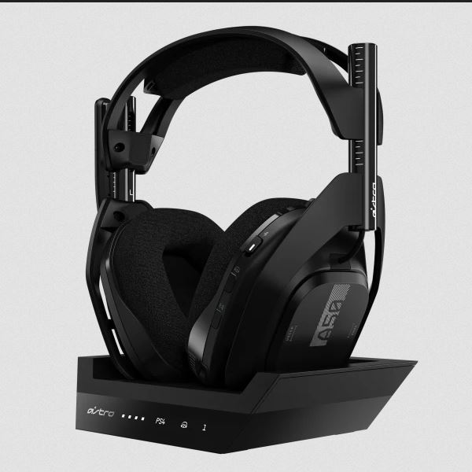

AURICULARES ASTRO A50 WIRELESS + BASE STATION PS4 / WINDOWS
Precio efectivo o transferencia: $102.960,00 

Precio efectivo o transferencia: $102.960,00
Características
ASTRO A50 WIRELESS + BASE STATION PS4 / WINDOWS / MAC
- AUDÍFONOS CON MICRÓFONO INALÁMBRICOS A50
ESPECIFICACIONES PRINCIPALES
Puertos:
ESPECIFICACIONES FÍSICAS
- ESTACIÓN BASE
ESPECIFICACIONES PRINCIPALES
ESPECIFICACIONES FÍSICAS